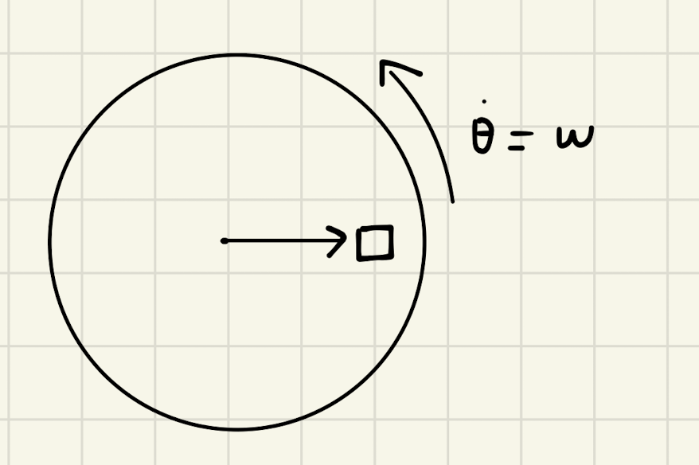

Backlinks
In this problem, we aim to determine functions \(f_1\), \(f_2\), that represents the velocity and acceleration vectors respectively of a circularly movable reference frame.
Here's the situation:

1 Defining First Principles
We begin by defining \(\vec{r}\), the vector representing the radius of the rotating frame, as follows:
\begin{equation} \vec{r} = r \cos(\theta) \hat{i} + r \sin{\theta} \hat{j} \end{equation}We define \(\theta\) as the angle up from the horizontal at which \(\vec{r}\) is located, and therefore the vector \(\vec{r}\) is simply the magnitude thereof \(r\) projected upon that angle \((\cos\theta, \sin\theta)\) into a vector.
Furthermore, we define a unit vector in the direction of \(\vec{r}\) as \(\hat{r}\). That is:
\begin{equation} \hat{r} = \cos(\theta) \hat{i} + \sin{\theta} \hat{j} \end{equation}Lastly, we define a vector \(\hat{\theta}\), a unit vector orthogonal to \(\vec{r}\). It is defined as such as the direction of \(\vec{\theta}\) would, at any given instance, be perpendicular to the direction of \(\vec{r}\) and parallel to the direction to its movement.
\begin{equation} \hat{\theta} = -\sin{\theta}\hat{i} + \cos{\theta}\hat{j} \end{equation}2 Determining changes in direction
We now create definitions for changes in "direction" — the changes present in \(\hat{r}\) and \(\hat{\theta}\) — which we will leverage later.
\begin{align} \frac{d\hat{r}}{dt} &= \frac{d}{dt}(\cos{\theta}\hat{i} + \sin{\theta}\hat{j}) \\ &= -\dot{\theta} \sin{\theta}\hat{i} + \dot{\theta}\cos{\theta}\hat{j} \\ &= \dot{\theta} (-\sin{\theta}\hat{i} + \cos{\theta}\hat{j}) \\ &= \dot{\theta}\hat{\theta} \end{align}Hence, the change in the direction of \(\hat{r}\), aptly and intuitively, could be modeled by the change in the angle \(\theta\) times the direction of \(\theta\).
\begin{align} \frac{d\hat{\theta}}{dt} &= \frac{d}{dt}(-\sin\theta \hat{i} + \cos\theta \hat{j}) \\ &= -\dot{\theta}\cos{\theta} \hat{i} - \dot{\theta}\sin\theta\hat{j} \\ &= -\dot{\theta} (\cos\theta\hat{i} + \sin\theta\hat{j}) \\ &= -\dot{\theta}\hat{r} \end{align}We now note that, indeed, the change in the direction of \(\theta\) is modeled by the direction at which \(\vec{r}\) exists, and the angle of \(\theta\) as \(\theta\) must be orthogonal to \(\vec{r}\).
3 Solving for \(f_1 = \vec{v}\)
We now begin to solve for a function \(f_1(\hat{r},\hat{\theta},\dot{r},\dot{\theta},r) = \vec{v}\). We know that the velocity of the frame as a whole could be modeled by the following expression:
\begin{align} \vec{v} &= r \frac{d\hat{r}}{dt} + \hat{r} \frac{dr}{dt} \\ &= r \dot{\theta}\hat{\theta} + \hat{r}\dot{r} \end{align}The derivation of this expression simply follows variable substitution to result in the expression modeling velocity: that the velocity of the point is determined by the radius-scaled velocity in the angle of the object (the velocity that's tangent to the radius), plus the velocity of the radius itself (how fast it grows, the radial velocity.)
4 Solving for \(f_2 = \vec{a}\).
We here wish to determine a function \(f_2(\hat{r},\hat{\theta},\dot{r},\dot{\theta},\ddot{r},\ddot{\theta},r) = \vec{a} = \frac{d}{dt}\vec{v}\)
Deriving the value of this expression, therefore, simply acts as a matter of taking the derivative of the top-derived expression and performing variable substitution for \(\dot{\hat{r}}\) and \(\dot{\hat{\theta}}\) as determined above as needed.
\begin{align} \vec{a} &= \frac{d}{dt} (r\dot{\theta}\hat{\theta} + \hat{r}\dot{r}) \\ &= ((\frac{d}{dt}r) \dot{\theta}\hat{\theta} + ((\frac{d}{dt} \dot{\theta})\hat{\theta} + (\frac{d}{dt} \hat{\theta})\dot{\theta})r) + ((\frac{d}{dt}\hat{r})\dot{r} + (\frac{d}{dt}\dot{r})\hat{r}) \\ =& ((\dot{r})\dot{\theta}\hat{\theta} + ((\ddot{\theta})\hat{\theta} + (-\dot{\theta}\hat{i})\dot{\theta})r) + ((\dot{\theta}\hat{\theta})\dot{r} + (\ddot{r})\hat{r}) \\ =& (\dot{r}\dot{\theta}\hat{\theta} + \ddot{\theta}\hat{\theta}r - \dot{\theta}^2 \hat{r}r) + (\dot{\theta}\hat{\theta}\dot{r} + \ddot{r} \hat{r}) \\ =& \hat{\theta}(2\dot{r}\dot{\theta} + \ddot{\theta}r) + \hat{r} (\ddot{r} - \dot{\theta}^2r) \end{align}We could now figure that acceleration is actually four terms, scaled by their respective directions (\(\hat{\theta}\) and \(\hat{r}\)). That is:
- \(2\dot{r}\dot{\theta}\) is a term representing the coriolis effect: a fictitious force pushing objects as either of radius change or spin speed changes. See More on the Cornelius effect
- \(\ddot{\theta}r\) is a term that models the tangential acceleration: how quickly does the object accelerates at a direction tangent to the spin. The "tangential acceleration." We could see this if \(\ddot{r} = \dot{\theta} = 0\).
- \(\ddot{r}\) is a term that models the acceleration of the radius, as it evidently shows. The "radial acceleration". We could see this if \(\dot{\theta} = \ddot{\theta} = 0\).
- \(\dot{\theta}^2 r\) is a term that models the inward acceleration that maintains the shape of the circle. It is \(\dot{\theta}^2 r = \omega^2 r\), the "centripetal acceleration." We could see this if \(\dot{r} = \ddot{r} = \ddot{\theta} = 0\)

For a point to stay on the circle, you have to have components of acceleration INTO the circle as well to prevent the side spin from making it fly off. Hence, "tangential acceleration" + "centripetal acceleration."
4.1 More on the Cornelius Acceleration
Say you have something like a small circle.

As \(r\) increases, we could see that there is more "ground" to cover. Hence, to maintain the same spin, as \(r\) increases (i.e. \(\exists \dot{r}\)), there needs to be a faster acceleration.
4.1.1 Pseudo-Forces
Let's think about centrifugal and centripetal forces.
Say you are in a bit of a car. The car turns. Weee! You are still being accelerated forwards (intertia is in a straight line).
The car has an centripetal acceleration towards the center of the radius of the turn, you feel pressed against the side of the car as the car is actually pushing against your mass' wish to simply move forward.
4.1.2 The Corelius Force

Think about this rotation as you. If your center of mass is not on the floor (which usually is the case, when you are standing), you "feet" will be taken away from you in the direction of \(\dot{\theta} = \omega\), but your center of mass stays in place. This will make you fall "downwards" or against the direction of \(\omega\).
If you are a ball, you will similarly roll "downwards" by the same token.